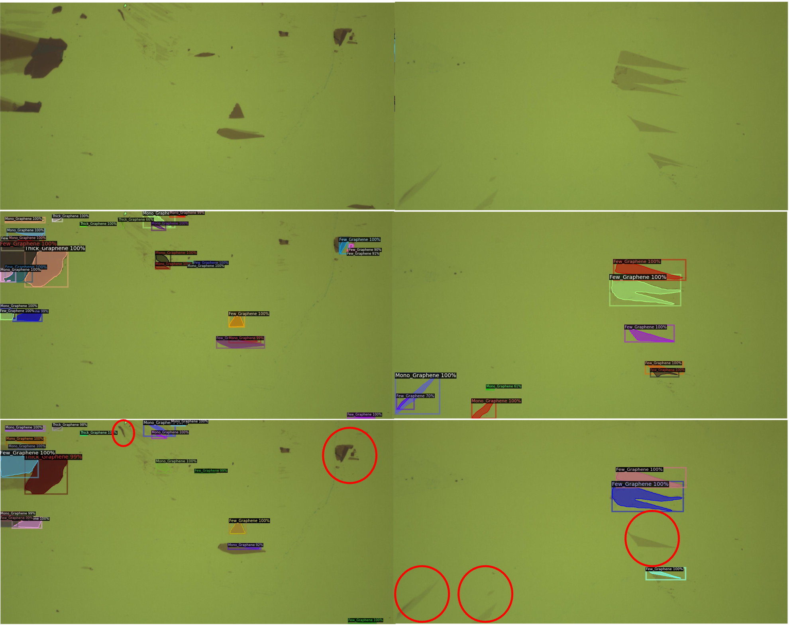

In quantum machine field, detecting two-dimensional (2D) materials in Silicon chips is one of the most critical problems. Instance segmentation can be considered as a potential approach to solve this problem. However, similar to other deep learning methods, the instance segmentation requires a large scale training dataset and high quality annotation in order to achieve a considerable performance. In practice, preparing the training dataset is a challenge since annotators have to deal with a large image, e.g 2K resolution, and extremely dense objects in this problem. In this work, we present a novel method to tackle the problem of missing annotation in instance segmentation in 2D quantum material identification. We propose a new mechanism for automatically detecting false negative objects and an attention based loss strategy to reduce the negative impact of these objects contributing to the overall loss function. We experiment on the 2D material detection datasets, and the experiments show our method outperforms previous works.
Overview
Our proposed method employs Mask-RCNN as the baseline architecture. It contains three main components namely: Backbone (B), Region Proposal Network (RPN) and Region of Interest Head (ROI).
Mask-RCNN is a two-stage framework where the results of the first stage will be the input of the second one. It raises a problem that if the first stage is not good enough, the performance of second stage will fall apart. The first stage includes RPN that also nominates the potential objects and their shapes represented by anchors. Apart from prior methods using selective search, RPN can be learnt via back-propagation. In the case of missing annotation, there are objects that do not have any bounding boxes. In a typical way, RPN is confused by treating these potential objects as a background while some similar objects are considered as foreground. In other words, missing annotation is a form of existing false negative and leads to lower recall of proposing potential objects. As the results, the next second stage will be influenced.
Our main contribution is to focus on the RPN to manipulate the missing annotation problem, enhance the confidence of proposed objects and subsequently improve the next stage as well as overall performance. Our proposed method is illustrated as in figure bellow.

The experimental results on 2D material datasets have shown the advantages of our work compared to prior work by a large margin.
